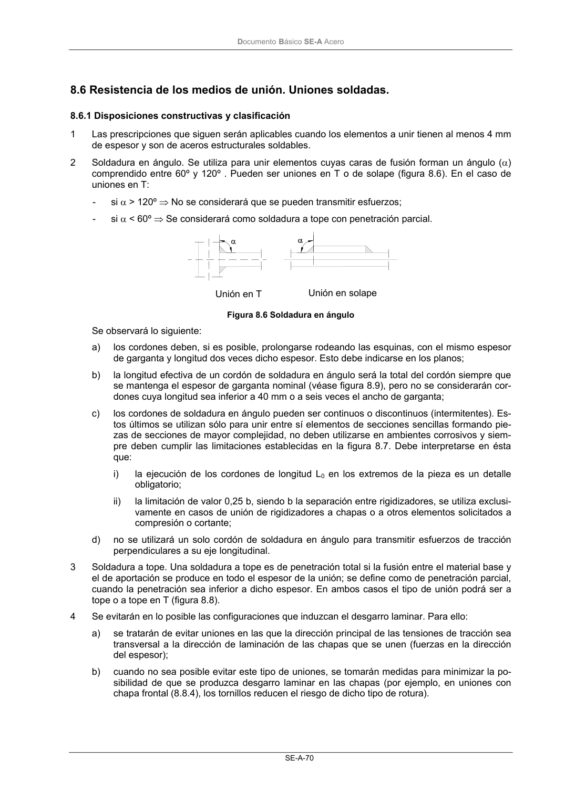

DB-SE-A · 8.6 Resistencia de los medios de unión. Uniones soldadas. · versión 2007-10-23 · capa oficial
Formatos: JSON compacto · Markdown · PDF fuente
Ámbito del documento · texto del ámbito · documento y tablas
ID técnico a0115 · PDF pág. 72 · jerarquía no validada por persona · contrastado con el literal de la página 72 (candidato tipográfico); no validado por persona · padre: raíz
8.6 Resistencia de los medios de unión. Uniones soldadas.

PDF fuente redistribuible: copia fiel enlazada en esta página (SHA256 verificado).